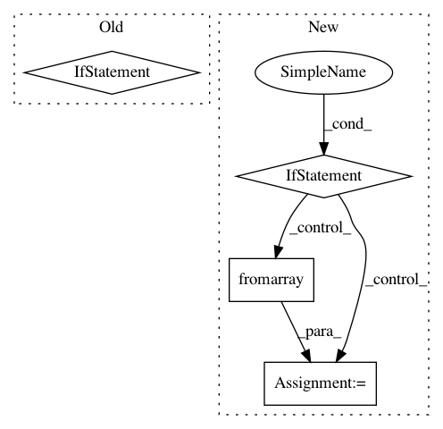

c261b64d51ef8f55ad04f7b09cad7da9deacafef,face_recognition/cli.py,,test_image,#Any#Any#Any#Any#Any#,42
Before Change
unknown_image = face_recognition.load_image_file(image_to_check)
// Scale down image if it"s giant so things run a little faster
if unknown_image.shape[1] > 1600:
scale_factor = 1600.0 / unknown_image.shape[1]
with warnings.catch_warnings():
warnings.simplefilter("ignore")
unknown_image = scipy.misc.imresize(unknown_image, scale_factor)
unknown_encodings = face_recognition.face_encodings(unknown_image)
for unknown_encoding in unknown_encodings:
distances = face_recognition.face_distance(known_face_encodings, unknown_encoding)
After Change
unknown_image = face_recognition.load_image_file(image_to_check)
// Scale down image if it"s giant so things run a little faster
if max(unknown_image.shape) > 1600:
pil_img = PIL.Image.fromarray(unknown_image)
pil_img.thumbnail((1600, 1600), PIL.Image.LANCZOS)
unknown_image = np.array(pil_img)
unknown_encodings = face_recognition.face_encodings(unknown_image)
for unknown_encoding in unknown_encodings:
distances = face_recognition.face_distance(known_face_encodings, unknown_encoding)
In pattern: SUPERPATTERN
Frequency: 3
Non-data size: 4
Instances
Project Name: ageitgey/face_recognition
Commit Name: c261b64d51ef8f55ad04f7b09cad7da9deacafef
Time: 2018-02-27
Author: ageitgey@gmail.com
File Name: face_recognition/cli.py
Class Name:
Method Name: test_image
Project Name: utkuozbulak/pytorch-cnn-visualizations
Commit Name: 697e7fa4f4a6e45566843adc24b126165b817ac0
Time: 2019-05-03
Author: utku.ozbulak@gmail.com
File Name: src/misc_functions.py
Class Name:
Method Name: save_image
Project Name: dmlc/gluon-cv
Commit Name: 1d0672c820261edb3a90ab6e5110d52c648ed689
Time: 2018-04-23
Author: 8041160+zhanghang1989@users.noreply.github.com
File Name: gluonvision/utils/viz/segmentation.py
Class Name:
Method Name: get_color_pallete